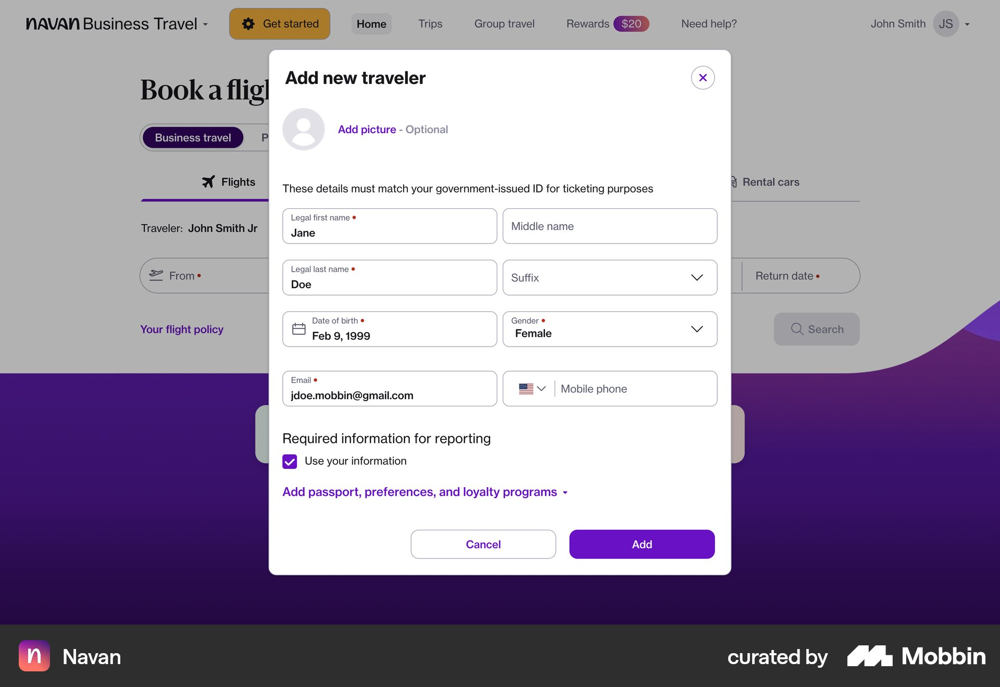
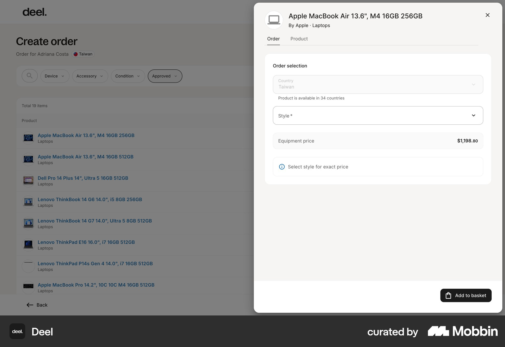
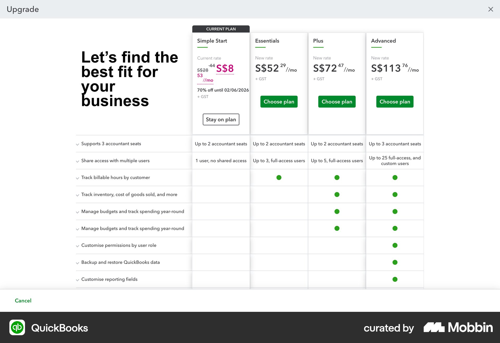
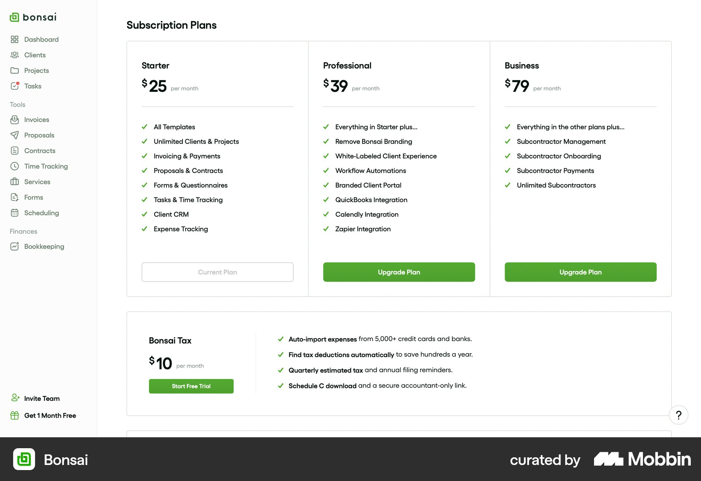
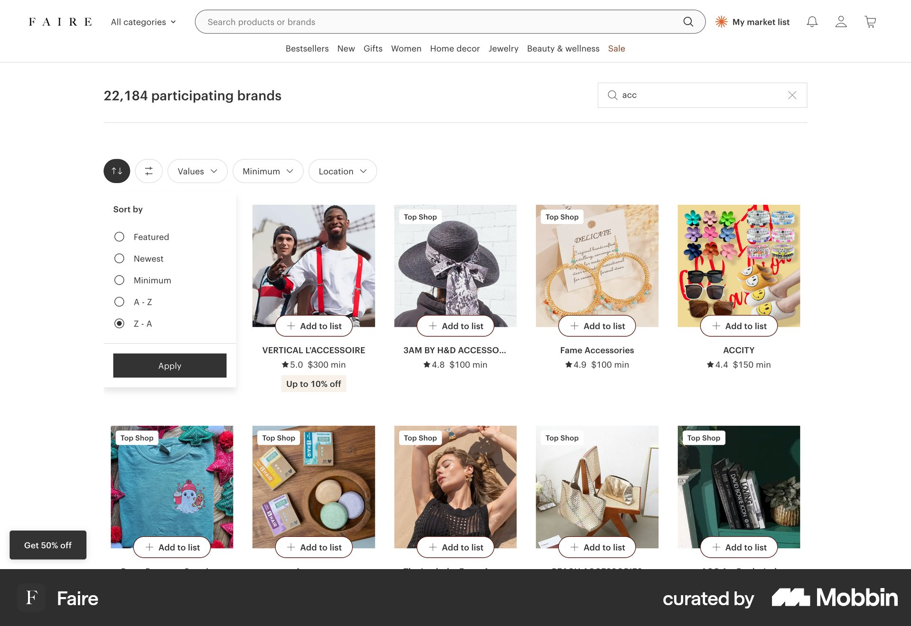
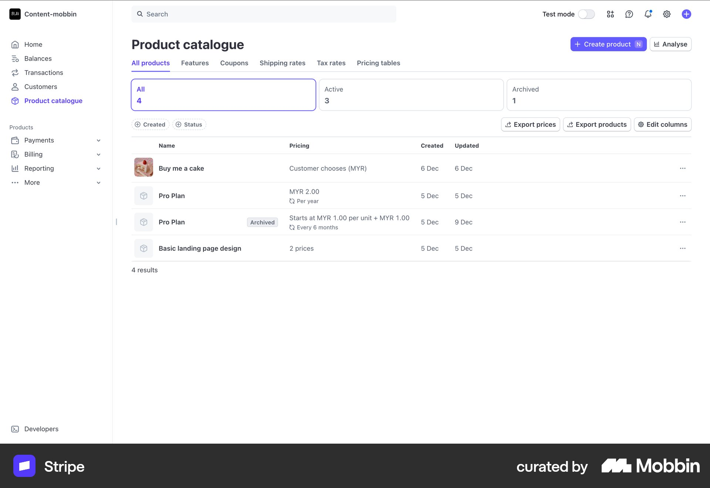
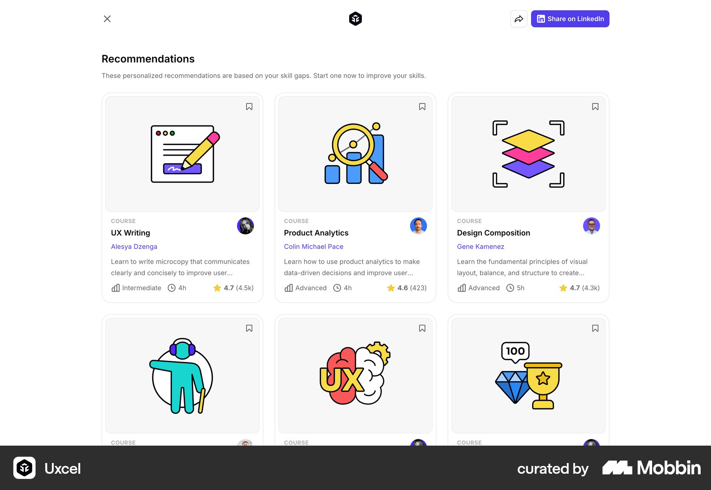
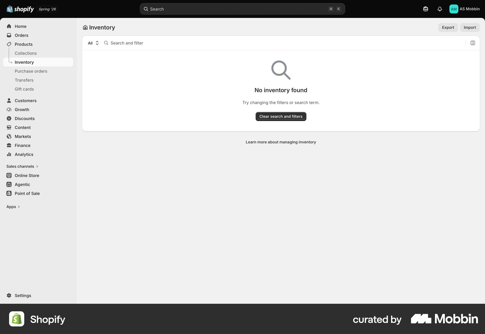

Run 02 · Stage 02 · design research
One question, handed over with four decisions.
A landed brief is the trigger — that's the patch from stage 01 doing its job. Nobody had to ask for research; the brief arriving was the ask.
Ten queries · web · same task intent · 16 kept
Adjacent precedent, labelled as such
Amdocs CES, Salesforce Industries, Ericsson and Netcracker are not in Mobbin. Pretending otherwise would have been the easiest lie in the run. Consumer shopper grids came back first; named-app queries recovered the useful set.








All 16 references, with their Mobbin links, are on the reference wall — the sub-tab above.
What the catalogs that are not shopper grids agree on
Five mechanisms, with counts
- 1Name the other person first. Navan (2 screens), Deel, HubSpot — 3 products, 4 screens. HubSpot won't even let you add line items until the quote is associated with a customer.
- 2Current is on the same surface as available — 5 of 5 plan pickers: Peec AI, QuickBooks, Framer, Bonsai, Juicebox. Four different surfaces, one mechanism.
- 3The number on screen is the number of rows. Faire, Stripe. Salesforce even prints
0 items · 2 Filters Applied. - 4Empty is a way out, not a poster. Shopify, Salesforce — the primary action clears the thing that caused it.
- 5A recommendation, when it exists, states why. Uxcel is the only screen in the set that writes the reason in plain language.
The decision the brief deliberately left open
How far “an agent's tool” goes — level 2, not level 3
“Agent's tool” is a direction, not a cut. The brief named three levels and required evidence for all three, so the PRD could pick one instead of inventing one.
The interesting finding was an omission. A screenshot cannot show a rule firing — so “don't invent eligibility” is the research result, not a failure to look. Level 3 would have been a rules engine we don't have, dressed as a design decision.
Four decisions, four answers, each with its evidence
What the research told us to build
$40.00 line they're already on.
Identity alone still makes the agent flip tabs to see the current line. Navan + Deel + HubSpot for the placement, the plan pickers for the holdings.
$40 line on another tab. 5 of 5 pickers put current on the surface; none shipped an 8-column matrix.
/offer wizard.
Deel: 19 items stay put, the panel does the work. Losing the grid is how the agent loses the other seven offers they were scanning.
Research earns its keep when it argues with the pattern
Three popular answers we rejected
Two of these are what the majority of the sample does. Counting the references is what made it safe to disagree with them — “most catalogs do X” is only an argument once you know what X costs the person holding the phone.